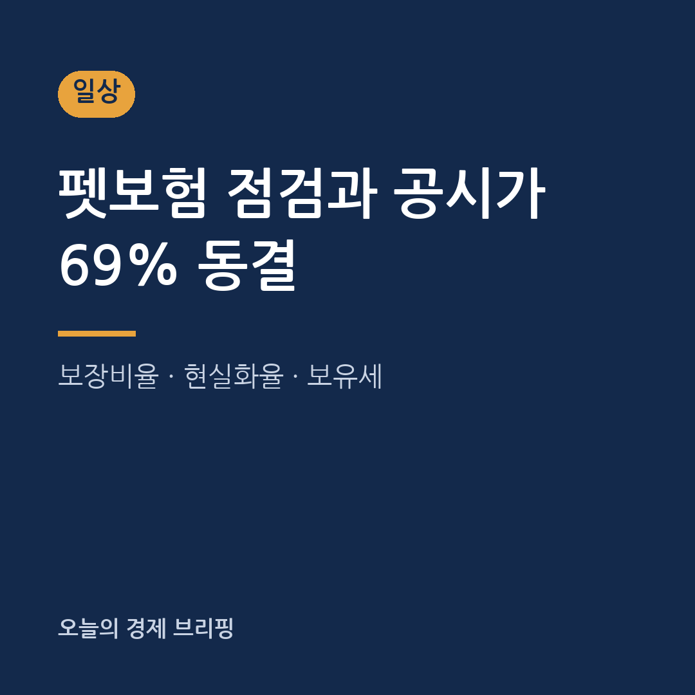
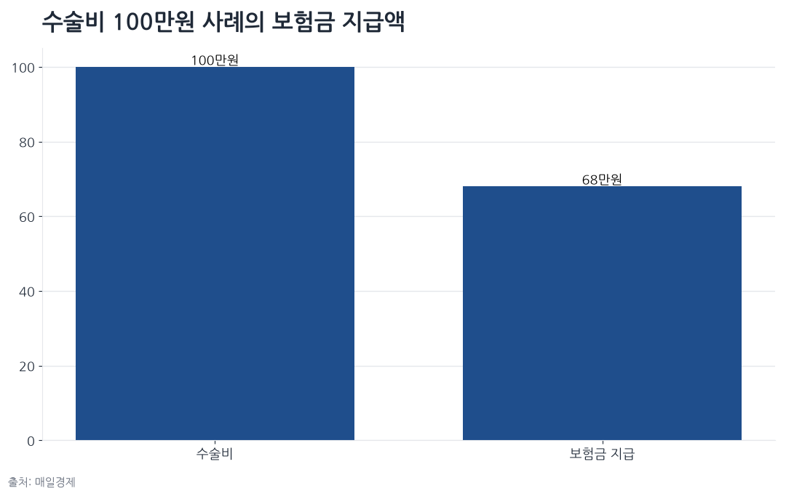
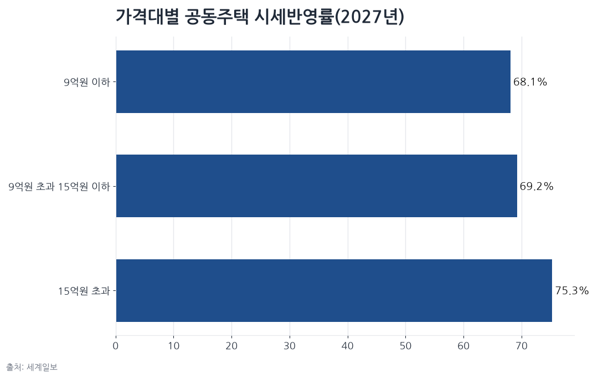

2026-11-21-1823-tistory 발행 키트 · 이 페이지는 검색에 노출되지 않습니다.
제목
카테고리
일상태그
본문 (그림·표 포함)
휴대폰 블로그 앱에서는 그림이 같이 붙지 않을 수 있어요. 그때는 [글자만 복사] 후 아래 이미지를 저장해 [그래프1]·[표1] 자리에 첨부하세요.

핵심 결론부터 정리합니다. 펫보험은 계약이 1년 만에 55% 늘었지만, 보험에 들어도 치료비 전부를 돌려받는 것은 아니므로 보장비율과 자기부담금을 먼저 비교해야 합니다. 또 내년 공동주택 공시가격 현실화율은 69%로 동결되어 세 부담의 급격한 확대는 피했으나, 집값이 오른 지역은 여전히 부담이 남을 수 있습니다.
▶ 배경: 반려동물 치료비와 펫보험 가입 증가
매일경제 보도에 소개된 반려동물 평균 치료비는 146만원입니다. 예기치 못한 진료가 생기면 가계에 적지 않은 지출이 되는 금액입니다.
이런 부담 속에서 펫보험 계약은 1년 만에 55% 증가했습니다. 가입자가 빠르게 늘고 있는 만큼, 상품 구조를 이해하고 고르는 일이 중요해졌습니다.
▶ 핵심 내용 1: 수술비 100만원 사례로 본 보험금 구조
같은 보도에서 소개된 사례는 수술비 100만원 가운데 68만원이 보험금으로 지급된 경우입니다. 차액 32만원은 가입자가 부담했습니다.
이 차이는 보험사가 치료비 중 얼마를 보장하는지를 뜻하는 보장비율, 그리고 청구 때 가입자가 먼저 부담하는 자기부담금 설정에서 발생합니다. 보험료만 비교하면 이 부분을 놓치기 쉽습니다.

▶ 영향: 가입 전 점검표
보도에서는 보장비율과 자기부담금 비교를 가장 먼저 확인할 사항으로 짚었습니다. 아래 표는 상품 설명서와 약관을 볼 때 함께 확인하면 좋은 항목을 정리한 것입니다.
펫보험 약관 점검표
| 점검 항목 | 확인 내용 | 확인 위치 |
|---|---|---|
| 보장비율 | 치료비 중 보험사 부담 비율 | 상품 설명서 |
| 자기부담금 | 청구 시 가입자 선부담 금액 | 약관 |
| 보장 범위 | 통원·입원·수술 포함 여부 | 상품 안내문 |
| 가입 조건 | 반려동물 나이·병력별 조건 | 보험사 상담 |
출처: 매일경제
반려동물의 나이와 품종, 병력에 따라 가입 조건이 달라질 수 있으므로 여러 상품의 안내문을 나란히 놓고 비교하는 방식이 안전합니다.
▶ 핵심 내용 2: 2027년 공동주택 공시가격 현실화율 동결
정부의 2027년 부동산 가격공시 추진방안에 따라 내년 공동주택 공시가격 현실화율은 69%로 유지됩니다. 현실화율은 공시가격을 시세에 얼마나 반영할지 정하는 비율입니다.
가격대별 시세반영률도 올해 수준 그대로입니다. 9억원 이하 68.1%, 9억원 초과 15억원 이하 69.2%, 15억원 초과 75.3%입니다.
2027년 공동주택 가격대별 시세반영률
| 가격대 | 시세반영률 | 올해 대비 |
|---|---|---|
| 9억원 이하 | 68.1% | 동일 |
| 9억원 초과 15억원 이하 | 69.2% | 동일 |
| 15억원 초과 | 75.3% | 동일 |
출처: 세계일보

▶ 영향과 확인할 점: 보유세 부담
우리은행 함영진 부동산리서치랩장은 현실화율 인상에 따른 추가 세 부담이 없어 집주인의 부담이 일부 완화될 것으로 분석했습니다. 세금 때문에 주택을 서둘러 팔아야 하는 압박도 줄어들 수 있다는 설명입니다.
다만 집값이 오른 지역은 현실화율이 같아도 공시가격 자체가 올라 세금이 늘 수 있습니다. 보유 주택이 해당 지역에 있다면 내년 공시가격 공개 시점에 본인 주택의 변동 여부를 확인해야 합니다.
▶ 정리
첫째, 펫보험은 계약이 1년 만에 55% 늘었지만 수술비 100만원 사례에서 보험금은 68만원이었습니다.
둘째, 가입 전에는 보험료보다 보장비율과 자기부담금, 보장 범위를 먼저 비교합니다.
셋째, 내년 공시가격 현실화율은 69%로 동결되지만 집값이 오른 지역의 보유세 부담은 달라질 수 있습니다.
이미지 (개별 복사·저장)
출처 (본문 맨 아래에 붙여넣기 권장)
- 매일경제, “널 가족이라 생각하지만, 돈은 좀 아껴야겠어”…댕댕이 펫보험 ‘주목’, https://www.mk.co.kr/news/economy/12215285 - 세계일보, “공시가 현실화율 동결, 보유세 충격 완화...집값 오른 지역은 부담 여전”, https://www.segye.com/newsView/20261120515569